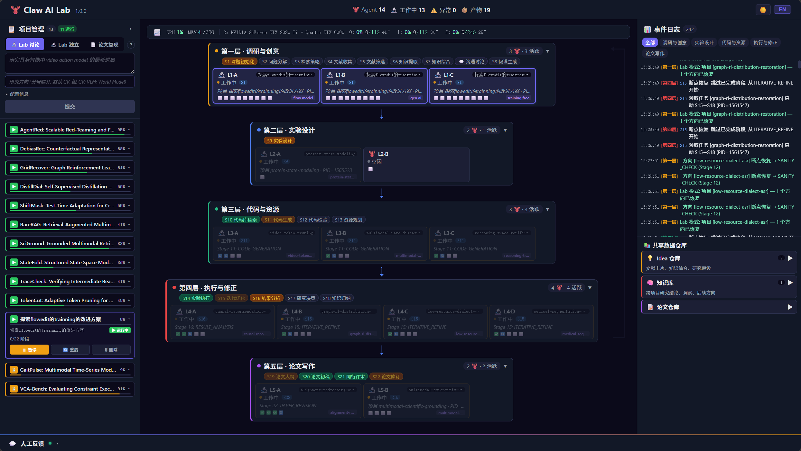
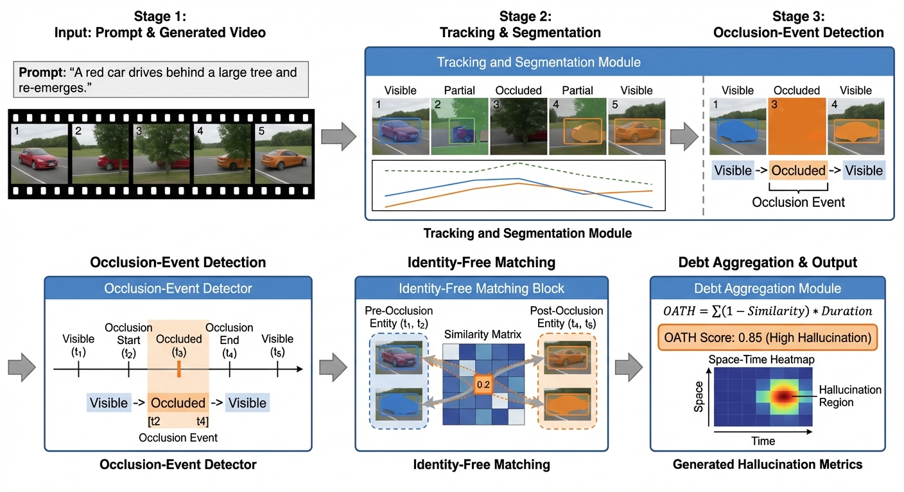
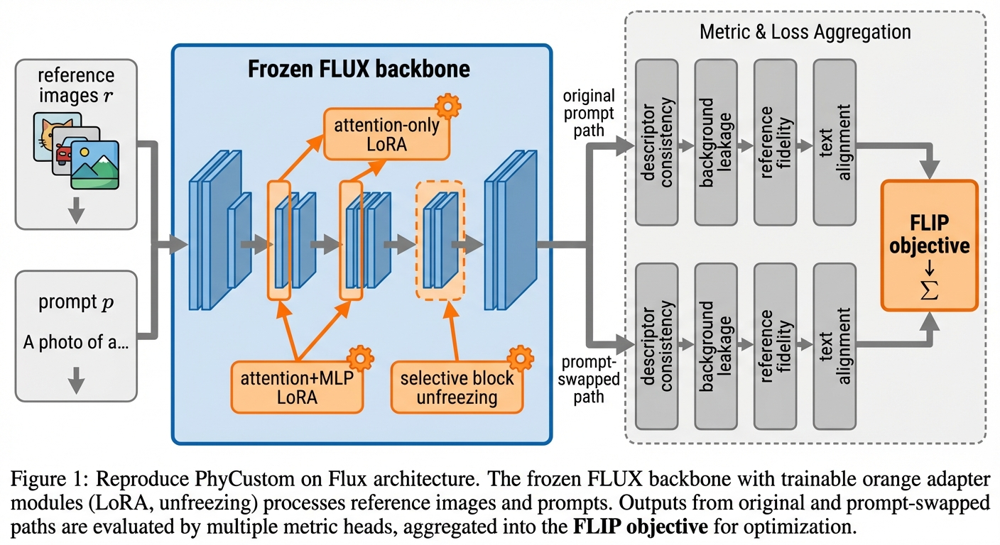

Lab-Native Multi-Agent Team
Configure customizable roles, research directions, and collaborative workflows instead of relying on a single agent or a rigid serial pipeline.
An Autonomous Multi-Agent Research Team
One dashboard. An entire research team.
Claw AI Lab is a lab-native multi-agent research platform for interactive, scalable AI-driven science. From a single prompt, it spins up a coordinated AI research team—complete with literature review, ideation, coding, experimentation, figure generation, and paper writing—managed through a unified web dashboard.
Configure customizable roles, research directions, and collaborative workflows instead of relying on a single agent or a rigid serial pipeline.
Orchestrate multiple agents and projects concurrently with a FIFO-based scheduler, maximizing compute utilization while sharing findings across runs.
Intervene at any point to resolve ambiguity, inject new ideas, or iteratively refine research via rollback and continuation.
Turn end-to-end automated research into prompts and clicks—monitor live events, manage queues, and inspect every artifact in one place.

Real-time web UI with live event stream, data shelf, multi-project monitoring, rollback/resume, and artifact inspection.
Reads your local codebases, datasets, and checkpoints—and writes runnable experimental code directly back to disk.
Goes from one prompt to a complete deliverable: paper, runnable code, figures, and experiment logs.
Explore (open-ended research), Discussion (multi-agent debate & consensus), and Reproduce (empirical reproduction).
Supports OpenAI-compatible, OpenAI, DeepSeek, and ACP providers; separate text/coding/image model endpoints; fallback chains; and optional Exa/Tavily web search.
Each project autonomously produces a complete research package: Paper · Code · Figures · Experiment Logs.

Best method achieves 0.1714 primary error vs. CLIP-T baseline 0.2393 (↓28%).
Read Full Report →
5 methods × 3 seeds = 15 runs; output-space decoupling leads at 0.2813.
Read Full Report →Multi-agent debate on: “What is the most deployable direction for Video Action Models in Embodied AI?”
World Model + MPC (Model Predictive Control) is the most industrially stable path.
“Train with video, infer with action” is the most deployable policy paradigm.
Execution monitoring & SOP (Standard Operating Procedure) automation lands fastest as a product.
| # | Top 3 Research Directions (ranked by deployability) | Deployability |
|---|---|---|
| 1 | Layered Video-Action Stack — video-action joint training + direct action inference + MPC safety | Highest — best balance of latency, interpretability, and safety |
| 2 | Video-to-Plan / SOP — demo videos → step sequences & skill graphs for existing robots | High — smallest embodiment gap, clearest commercial path |
| 3 | Execution Monitor — real-time step tracking, anomaly detection, and re-planning triggers | High — fastest to production; critical for industrial reliability |
| Debate | Resolution |
|---|---|
| World Model + MPC vs. Direct Action? | Combine both — world model for representation, direct action for control, MPC for safety |
| Human video: valuable or too much gap? | Pre-training yes; direct low-level transfer is not yet reliable |
| Is monitoring a “real” action model? | Not the backbone, but fastest to reach production value |
git clone https://github.com/Claw-AI-Lab/Claw-AI-Lab.git
cd Claw-AI-Lab
# Create Python environment
conda create -n clawailab python=3.11
conda activate clawailab
# Backend
cd backend/agent
pip install -e ".[all]"
pip install websockets
# Frontend
cd ../../frontend
npm install
cd ..
# ML dependencies (add extra packages as needed for your domain)
pip install torch torchvision diffusers transformers accelerate safetensors datasets \
huggingface_hub opencv-python pandas matplotlib scikit-image scipy einops tqdmllm:
base_url: "your-api-endpoint"
api_key: "your-api-key"
primary_model: "gpt-5.4"
coding_model: "gpt-5.4"
image_model: "gemini-3-pro-image-preview"
image_base_url: "" # Optional: separate endpoint for image generation (defaults to base_url)
image_api_key: "" # Optional: separate API key for image generation (defaults to api_key)
fallback_models:
- "qwen3.5-plus"
- "qwen-plus"
experiment:
sandbox:
python_path: "/absolute/path/to/clawailab/bin/python" # Run: conda activate clawailab && which python./start.sh # Start all services (resource monitor, agent bridge, frontend)
./start.sh status # Check service status
./start.sh restart # Restart all services
./start.sh stop # Stop all services
./start.sh reset-state # Clear persisted projects, queues, and shared indices (run after stop)
./start.sh fresh # Stop, reset state, and start cleanlyhttp://localhost:5903/ in your browser, submit a research topic, and
monitor your agents live. If default ports (5903, 8905,
8906) are in use, override them at launch:
RESOURCE_MONITOR_PORT=8915 AGENT_BRIDGE_PORT=8916 FRONTEND_PORT=5913 ./start.sh
If you find Claw AI Lab useful in your research, please cite:
@article{wu2026claw,
title={Claw AI Lab: An Autonomous Multi-Agent Research Team},
author={Wu, Fan and Chen, Cheng and Tan, Zhenshan and Zhang, Taiyu and Xu, Xinzhen and Qian, Yanyu and Gao, Dingcheng and Zhu, Lanyun and Zhu, Qi and Tan, Yi and others},
journal={arXiv preprint arXiv:2605.22662},
year={2026}
}@misc{wu2026clawailab,
author = {Wu, Fan and Chen, Cheng and Tan, Zhenshan and Zhang, Taiyu and Xu, Xinzhen and Qian, Yanyu and
Gao, Dingcheng and Zhu, Lanyun and Zhu, Qi and Tan, Yi and Ji, Deyi and
Lin, Guosheng and Chen, Tianrun and Ye, Deheng and Liu, Fayao},
title = {Claw AI Lab: An Autonomous Multi-Agent Research Team},
year = {2026},
url = {https://github.com/Claw-AI-Lab/Claw-AI-Lab},
note = {GitHub repository}
}Join our WeChat groups for beta testing, Q&A, and research discussions, or contribute directly on GitHub.
Claw AI Lab builds upon ideas and code from AutoResearchClaw, AutoResearch, and claw-code. We thank the authors for their contributions to the open-source research community.
Released under the MIT License. Bug reports, feature proposals,
documentation improvements, and pull requests against preview-v1.1.0 are
warmly welcome via
GitHub Issues.